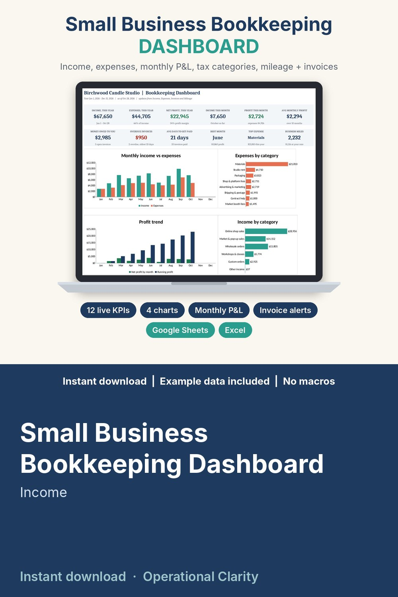

Small Business Bookkeeping Dashboard

SMALL BUSINESS BOOKKEEPING DASHBOARD | Google Sheets and Excel | Instant Download
See exactly how your business is doing, every month, without accounting software. Log income, expenses, invoices and business miles, and one dashboard shows your profit, who still owes you, your biggest costs and year-end totals grouped for your tax professional.
WHAT IT DOES
• Income log by category and payment method, with an optional invoice # for each payment
• Expense log by category and payment method, with business-use % for mixed costs and a "receipt saved?" check
• Monthly P&L: every income and expense category across 12 months, totals, net profit, profit margin and running profit
• Tax-category summary: year totals grouped by Schedule C-style labels you choose, mileage included, plus a count of missing receipts (for organizing records only, not tax advice)
• Mileage log: odometer start / end, miles and the amount at YOUR rate (you type the rate, nothing is hard-coded)
• Invoice tracker: due dates from your terms, balance, PAID / UNPAID / OVERDUE status, days overdue and average days to get paid
WHAT'S INSIDE (9 tabs)
• DASHBOARD - 12 KPI tiles, 4 charts (monthly income vs expenses, expenses by category, profit trend, income by category) and an unpaid + overdue invoice list
• Income - 1,500 rows
• Expenses - 2,000 rows
• Invoices - 500 rows
• Mileage - 1,000 rows
• Monthly P&L - 12 months by category
• Tax Summary - Schedule C-style totals
• Settings - business name, year start, mileage rate (your input), invoice terms, categories, labels, payment methods
• START HERE - tab guide, 15-minute setup and a weekly routine (also as a PDF)
HOW IT WORKS
1) Open the workbook in Google Sheets (File upload, then Open with Google Sheets) or Excel. 2) Set your year start, categories and mileage rate in Settings. 3) Log income, expenses, invoices and trips as they happen. 4) Read the DASHBOARD: profit, money owed to you and where the money goes, updated automatically.
BEST FOR
Makers and handmade sellers, online shops, freelancers, service businesses, side hustles and anyone self-employed who wants clean monthly numbers and an organized year-end summary.
WHY THIS ONE
Realistic example data (a small candle studio: 10 months of sales, 278 expenses, 38 invoices and 123 trips) is already filled in, so you can see how every tab connects before you type a thing. Yellow cells are where you type, green cells calculate. No macros, no add-ons, no monthly fee.
FORMATS
• Small_Business_Bookkeeping_Dashboard.xlsx - works in Google Sheets, Microsoft Excel 2010 or newer, and LibreOffice
• 0_START_HERE.pdf - setup guide
GOOD TO KNOW
• Instant digital download. No physical item will be shipped.
• The Tax Summary is for organizing your records only. It is not tax advice; check with a tax professional.
• Personal / single-business use. No reselling or sharing, including modified versions.
• For your own records: it does not connect to your bank, store or accounting software.